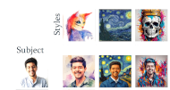
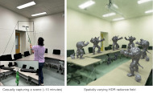
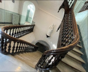
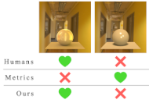
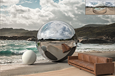
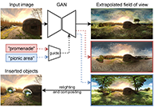
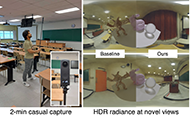

Hi, I'm Mohammad Reza Karimi Dastjerdi—Momo! I work at the intersection of computer vision, computer graphics, and deep learning. I received my PhD from Université Laval, where I was supervised by Prof. Jean-François Lalonde, and my research focused on lighting estimation and virtual object insertion to advance immersive digital experiences.
Before joining Université Laval, I earned my master's degree at the Visual Media Lab (VML) of KAIST, under the supervision of Prof. Junyong Noh.
Throughout my PhD journey, I've had the privilege of collaborating with esteemed researchers worldwide, including Prof. Nima Kalantari (Texas A&M University), Prof. Javier Vazquez-Corral (Universitat Autònoma de Barcelona), and Prof. P J Narayanan (IIIT, Hyderabad).
I've also gained hands-on industry experience through internships at Adobe, where I collaborated with Dr. Yannick Hold-Geoffroy and Dr. Jonathan Eisenmann, and at Qualcomm, working with Dr. Kartikeya Bhardwaj and Dr. Harris Teague.
I'm deeply passionate about developing creative technologies and building digital tools that empower artists to bring their visions to life. If you're interested in my work or exploring potential collaborations, feel free to reach out—I'd love to connect!






Featured at Adobe Max Sneaks 2022.

{kind=link}